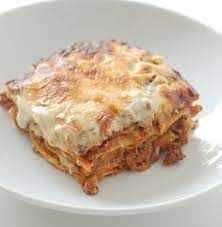

Lasagne Recipe

Description
This is an adaptation of the official lasagne from the
Bolognese Chamber of Commerce. I've made a couple of
changes suggested to me by people from the area, such
as which meat and wine to use or if there should be milk
added or not. One thing never in question, though, is
the green lasagne sheets. These are a must. The ragu is
an authentic sauce, simple without garlic or herbs and
spices. Using fresh pasta keeps you from having to
pre-boil it
Prep time: 30 mins
Cook time: 3 hrs 20 mins
Additional time: 10 mins
Total time: 4 hrs
Servings: 10
Yield: 1 9x13-inch lasagne
Ingredients
- Ragu:
- 1 (3 ounce) package pancetta, minced
- ½ cup diced carrot
- ½ cup diced celery
- ½ cup diced yellow onion
- 1 tablespoon olive oil
- 7 ounces ground beef
- 1½ cups plain tomato sauce
- 2 cups vegetable broth, or more as needed
- Pasta:
- ¼ cup water
- 1 pinch salt
- ½ (8 ounce) package frozen spinach
- ½ (16 ounce) package gluten-free all-purpose
baking flour
- 2 medium eggs, at room temperature
- salt to taste
- ½ cup whole milk
- Bachamel Sauce:
- ⅓ cup unsalted butter
- ⅓ cup gluten-free all-purpose baking
flour
- 2 cups whole milk
- ¼ teaspoon ground nutmeg
- ⅛ teaspoon salt
- 1 cup finely grated Parmigiano-Reggiano
cheese
Steps
- Saute pancetta in a large stockpot over medium-high
heat until fat has rendered, 1 to 2 minutes. Add
carrot, celery, onion, and oil. Cook and stir until
vegetables have softened and onion is translucent,
about 5 minutes. Add beef and pork. Cook, stirring
and mashing meat into small crumbles, until browned,
5 to 7 minutes more.
- Stir wine into the stockpot and bring to a boil.
Add tomato sauce and stir; pour in 1 cup broth.
Reduce heat to low and partially cover the pot to
allow steam to escape. Simmer sauce for 1 hour,
stirring occasionally.
- Pour 1 more cup of broth into the sauce.
Continue simmering until thick, 1 to 1 1/2 hours.
Add more broth only if absolutely necessary; ragu
should drop, not run, off a spoon.
- Start preparing pasta after sauce has been cooking
for 1 1/2 hours. Bring water and salt to a boil in a
small saucepan. Add spinach and cover until it
returns to a boil. Stir gently and cook until spinach
is heated through. Remove from heat, leave covered, and
let cool.
- Drain spinach in a mesh strainer set over a bowl,
pressing it down with a fork to squeeze out as much
water and possible; reserve the liquid. Puree spinach
in a blender until smooth.
- Sift flour into a bowl. Make a well in the center;
add eggs, spinach, and about 1 tablespoon of the
reserved liquid. Mix together by hand or using the
dough hook of a stand mixer, adding more liquid if
needed. Knead until dough becomes a smooth ball. Cover
with plastic wrap and let sit at room temperature for
30 minutes.
- Taste the ragu and adjust salt. Remove from heat
and add milk; stir well and set aside to cool.
- Divide pasta dough into 4 equal sections. Use a
pasta machine, or rolling pin, dusted with flour,
to roll pasta into 1/16-inch thick sheets. Lay sheets
on clean dish towels to help them dry. Let rest for
20 minutes.
- Meanwhile, melt butter in a saucepan over medium
heat. Do not allow it to brown or burn. Add flour and
whisk constantly until golden. Add 1/2 cup milk,
whisking constantly. Repeat with remaining milk.
Simmer until bechamel is thickened, about 10 minutes.
Season with nutmeg and salt.
- Preheat the oven to 350 degrees F (175 degrees C).
- Spread a bit of the ragu sauce over the base of a
9x13-inch baking dish. Add a layer of pasta. Top with
a spoonful of sauce and bechamel. Add a spoonful of
grated Parmigiano-Reggiano. Top with another layer of
pasta. Add more sauce, bechamel, and cheese. Repeat
layers until you reach the top; finish with a layer of
pasta, bechamel, and cheese.
- Bake in the preheated oven until the sauce is
bubbling and the cheese on top has browned, 25 to
30 minutes. Let lasagne rest for 10 or 15 minutes at
room temperature before slicing.